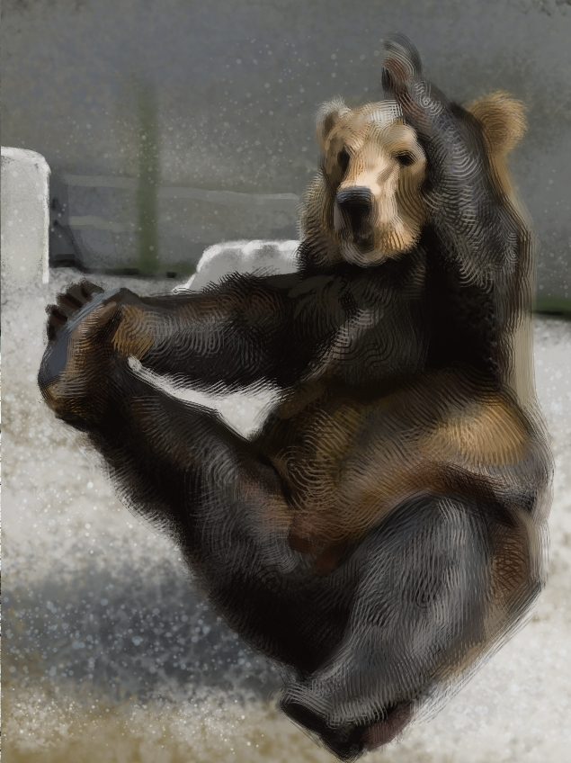

David Lynch
I got new ink brushes and wanted to test them out. I came across this image of David Lynch so I gave it a go. First I sketched it out with water soluable orange pencil. Then I used a fine liner to define the forms a bit more. I then got my new thicker ink brush and started to make bigger strokes, mainly in places where shadows would be. The pencil and fineliner ink started to react a but and I got the idea to use a clean brush with some water in certain areas. You can see the effect it had on the left side of his face. The colours that came out of this were pretty interesting. Ink from the fine liner had a more blueish hue, and the orange watercolour pencil made warmer shades.
Outdoor watercolour
This was originally a watercolour I had done fairly quickly outside. I didnt like the paper I was using because it soaked up water so fast. That made it difficult to cover large areas with the watercolours. Later I was inking some things and I saw this old painting and decided to go over it with lines. I made alot of mistakes with the bricks in the back ground, and I think they could have used alot more colour. But I really like the way the flowers came out, they pop out alot more than they did.
Digital painting study
I honestly forget who this is, but the reason I chose it was for the tonal values. There is a good range from white to black so it was easy enough to copy them and get a decent looking painting. My focus was on making soft/hard strokes and the affect that can have on drawing the eye around the painting. Im not really a fan of the effect, I think I went a bit overboard. Its like a camera shot with alot of depth of field, but what is in and out of focus is kind of inconsistent. I should mention that I do most of my digital painting in Krita.
Digital painting animal study
My goal with this painting was to use only very rough brushes with lots of texture. I also wanted to paint it very fast, well fast for me. So it took around 20 minutes.
more animal studies

Digital painting of a tennis player
These kinds of poses are really fun to paint. I used very flat square brushes and was just focused on the different planes of the form. Best example of this is probably the face, theres really no detail there, I just wanted to capture the angles and how they catch the light. Im happy with how that right arm looks, you can feel the twist in her muscles. Probably should have drawn the racket...
Ink and gouache paintings
This is a pretty bad photo but what can ya do. For these I did very quick pencil sketches then inked them quickly with a fine liner. Then used gouache paint to add some colour, then more inking with a larger brush. Gouache is like watercolour but can be applied thickly to cover whats underneath. You can see this on the faces of the women top right and bottom left, there was ink or some other colour already on their face, and I went back over it with gouache to get the tone I wanted. You can also see it on her hand holding the phone.
Outdoor watercolour
This was a tough painting. The day was extremely sunny, I didnt realise how light everything on my painting was until I got home. Also I was sitting on a rocky pier which hurt my ass, thankfully I didnt notice it while painting, but afterwards.. This was done with watercolours and watercolour pencils.
Sketchbook drawing
Just a drawing of some guy pretending to be a knight, I dont know.
outdoor watercolour
Another extremely sunny day, I think I dealt with it way better in this one. You get a little blind looking at the white paper after a few minutes, so i just went alot darker than I thought I needed to. This is probably my favourite watercolour ive ever done.